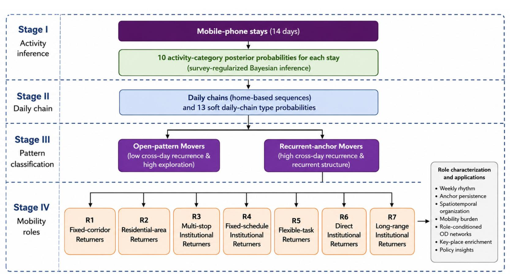
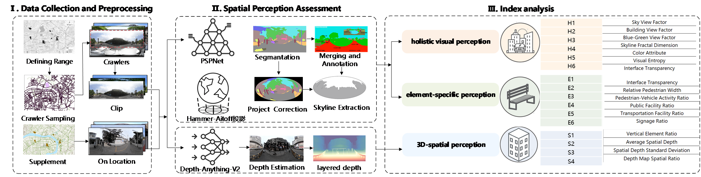

2025–2026
Activity Chains & Anchor-Related Travel
Inferring activity purposes and understanding household coordination from mobile phone signalling and travel surveys.
Research questions, spatial applications and work with communities.

2025–2026
Inferring activity purposes and understanding household coordination from mobile phone signalling and travel surveys.

Jun 2026–present
POI and footfall analysis, commercial catchments, service coverage and route evaluation.

2025
Street-view assessment and visitation-flow modelling connect urban environments with service provision.

2024
Structured information extraction and geographic relationships for POI accuracy and navigation feedback.
Fieldwork and heritage planning with communities in Longnan, Yuanyang, Huizhou and Lichuan.